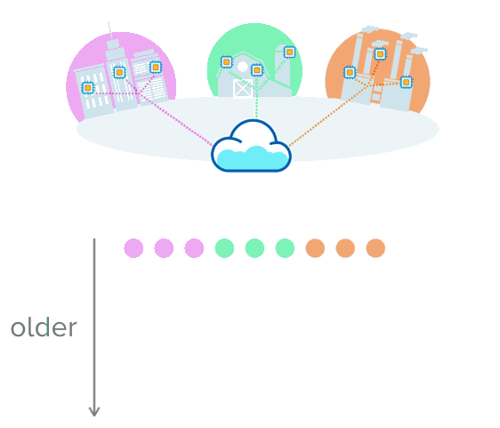
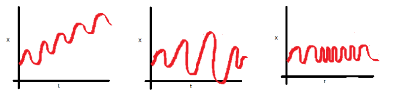
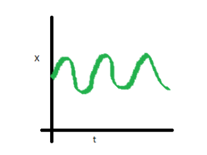
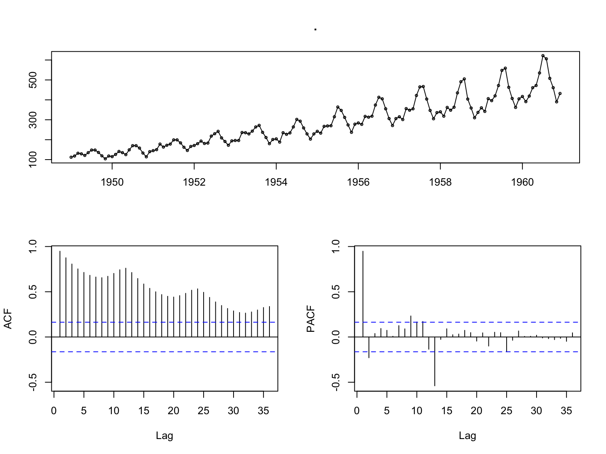
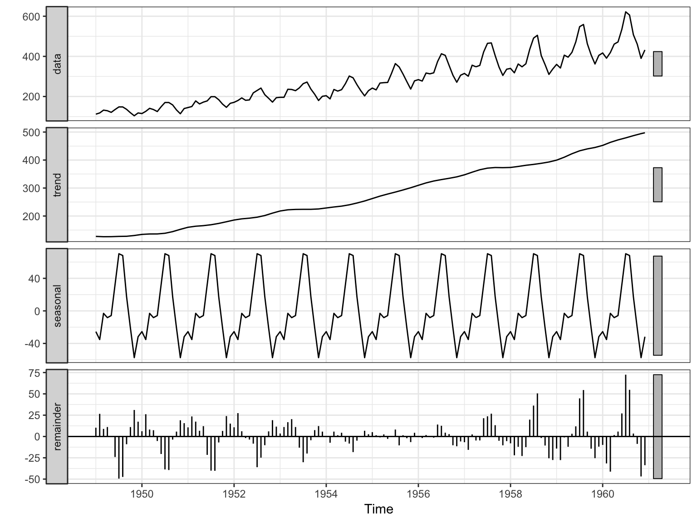
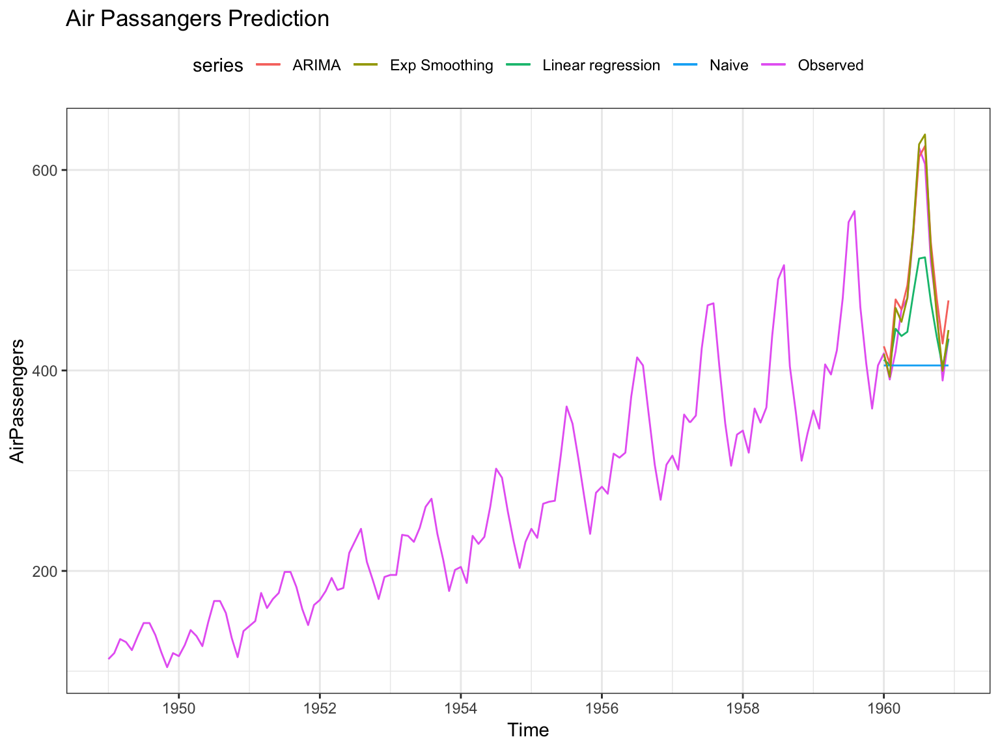
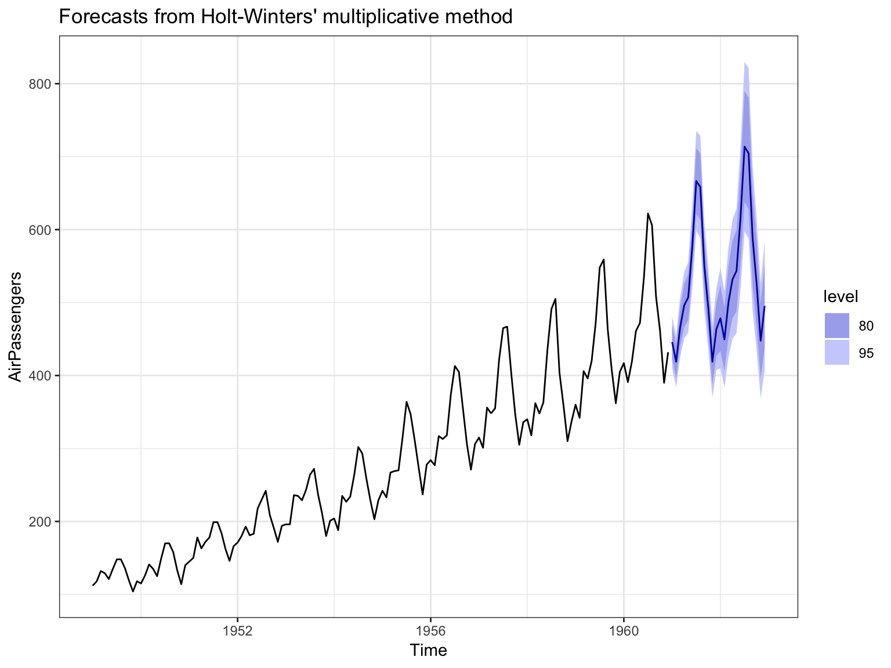

packrat::restore()forecast package by Rob J Hyndman.


head(AirPassengers, 12)## Jan Feb Mar Apr May Jun Jul Aug Sep Oct Nov Dec
## 1949 112 118 132 129 121 135 148 148 136 119 104 118AirPassengers %>% tsdisplay()
AirPassengers %>%
stl(s.window = 'periodic') %>%
autoplot()
# keep the last year as test set
train <- window(AirPassengers, end=1959+11/12)
test <- window(AirPassengers, start=1960)# try different hyperparameters!
# linear regression
mod1 <- tslm(train ~ trend + season)
# ARIMA
mod2 <- auto.arima(train)
# exponential smoothing
mod3 <- hw(train, seasonal = 'multiplicative') h <- length(test)
# benchmark prediction: use value in the previous period
benchmark <- naive(train, h=h)
mods <- list(
lm = mod1,
arima = mod2,
exp_smooth = mod3
)
# make predictions on test set
preds <- map(mods, ~ forecast(.x, h=h))# RMSE score for comparison
accuracy(benchmark, test)[, 'RMSE']## Training set Test set
## 31.33213 102.97653map(preds, ~ accuracy(.x ,test, h=h)[, 'RMSE'])## $lm
## Training set Test set
## 22.35917 49.47908
##
## $arima
## Training set Test set
## 9.907267 23.931703
##
## $exp_smooth
## Training set Test set
## 9.949946 16.583116
# train on the whole data set
final_mod <- hw(AirPassengers, seasonal = 'multiplicative')
# let's have a 3 year future forecast
h <- 12 * 3
fc <- forecast(final_mod, h)
format_ts <- function(ts) {
ds <- as.Date(zoo::as.yearmon(time(ts)))
y <- as.matrix(ts)
return(data.frame(ds = ds, y = y))
}
air_passengers <- format_ts(train) # format the input as required by Prophet
# fitting
mod4 <- prophet(air_passengers, seasonality.mode = "multiplicative")## Initial log joint probability = -2.41026
## Optimization terminated normally:
## Convergence detected: relative gradient magnitude is below tolerancefuture <- make_future_dataframe(mod4,
periods = 12,
freq = 'month')
forecast <- predict(mod4, future)
yhat <- forecast$yhat[133:144] # subtract test set period
rmse <- sqrt(mean(yhat - test)^2 ) # calculate RMSE score
paste('RMSE: ', rmse)## [1] "RMSE: 15.387713599209"air_passengers <- format_ts(AirPassengers)
prophet_mod <- prophet(air_passengers, seasonality.mode = "multiplicative")## Initial log joint probability = -2.46502
## Optimization terminated normally:
## Convergence detected: relative gradient magnitude is below tolerancefuture <- make_future_dataframe(prophet_mod,
periods = 12,
freq = 'month')
forecast <- predict(prophet_mod, future)dyplot.prophet(prophet_mod, forecast)statsmodels)